🌿 1. Thành Phố Biển Quy Nhơn — Vẻ Đẹp Thuần Khiết & Thơ Mộng
🌿 1. Thành Phố Biển Quy Nhơn — Vẻ Đẹp Thuần Khiết
Khác biệt với sự nhộn nhịp hối hả của Nha Trang hay vẻ hiện đại của Đà Nẵng, Quy Nhơn gìn giữ cho mình một nhịp sống chậm rãi, bình yên và hiền hòa. Bờ biển uốn lượn ôm trọn lấy thành phố với bãi cát thoai thoải sạch bong, bán đảo Phương Mai sừng sững che chắn sóng gió đại dương và những hòn đảo hoang sơ rải rác ngoài khơi như Kỳ Co, Hòn Khô, Cù Lao Xanh.
Không chỉ sở hữu cảnh sắc thiên nhiên biển đảo tuyệt mỹ, Quy Nhơn còn được tôn vinh là một trong những trung tâm khoa học và du lịch hàng đầu miền Trung với Trung tâm Quốc tế Khoa học và Giáo dục Liên ngành (ICISE) và Công viên Sáng tạo Quy Hòa — nơi tụ hội của nhiều nhà khoa học đoạt giải Nobel trên toàn thế giới.
🏛️ 2. Vị Trí Địa Lý & Dấu Ấn Vương Triều Chăm Pa - Tây Sơn
Thành phố Quy Nhơn là đô thị trung tâm kinh tế, chính trị, văn hóa của tỉnh Bình Định. Theo Quyết định số 159/QĐ-TTg ngày 25/01/2010 của Thủ tướng Chính phủ, Quy Nhơn chính thức được công nhận là Đô thị loại I trực thuộc tỉnh.
Bình Định từng là kinh đô Đồ Bàn (Vijaya) của vương quốc Chăm Pa cổ suốt 5 thế kỷ (từ thế kỷ XI đến thế kỷ XV). Dấu ấn kiến trúc Chăm Pa tại đây được bảo tồn nguyên vẹn và đậm đặc bậc nhất Việt Nam. Tiêu biểu là Quần thể Tháp Đôi (Tháp Hưng Thạnh) được Bộ Văn hóa - Thông tin xếp hạng là Di tích Kiến trúc Nghệ thuật Quốc gia theo Quyết định số 983-VH/QĐ ngày 04/8/1980, và Quần thể Tháp Bánh Ít (Tháp Bạc) xếp hạng Di tích Quốc gia theo Quyết định số 201/VH-QĐ ngày 15/11/1982 — từng lọt vào cuốn sách kiến trúc quốc tế "1.001 công trình kiến trúc phải đến trong đời".
Đặc biệt, quê hương Tây Sơn của người anh hùng áo vải cờ đào Quang Trung - Nguyễn Huệ tại huyện Tây Sơn (cách Quy Nhơn ~45km) đã được Thủ tướng Chính phủ xếp hạng là Di tích quốc gia đặc biệt theo Quyết định số 2408/QĐ-TTg ngày 31/12/2014. Về văn hóa phi vật thể, Võ cổ truyền Bình Định và Hát Bội Bình Định được công nhận là Di sản văn hóa phi vật thể Quốc gia theo Quyết định số 2684/QĐ-BVHTTDL, còn Nghệ thuật Bài Chòi Trung Bộ được UNESCO ghi danh là Di sản văn hóa phi vật thể đại diện của nhân loại năm 2017.
📜 Cơ sở dữ liệu pháp lý & Quyết định xếp hạng của Nhà nước Việt Nam:
- Đô thị loại I trực thuộc tỉnh Bình Định: Thành lập và công nhận theo Quyết định số 159/QĐ-TTg ngày 25/01/2010 của Thủ tướng Chính phủ, là trung tâm kinh tế, văn hóa và du lịch biển trọng điểm miền Trung.
- Di tích Quốc gia Đặc biệt Đền thờ Tây Sơn Tam Kiệt: Xếp hạng Di tích quốc gia đặc biệt theo Quyết định số 2408/QĐ-TTg ngày 31/12/2014 của Thủ tướng Chính phủ; nơi thờ ba anh em nhà Tây Sơn (Nguyễn Nhạc, Nguyễn Huệ, Nguyễn Lữ).
- Di tích Kiến trúc Nghệ thuật Quốc gia Quần thể Tháp Bánh Ít: Xếp hạng Di tích quốc gia theo Quyết định số 201/VH-QĐ ngày 15/11/1982 của Bộ Văn hóa, lọt top công trình kiến trúc cổ độc đáo thế giới.
- Di tích Kiến trúc Nghệ thuật Quốc gia Tháp Đôi Chăm Pa: Xếp hạng Di tích quốc gia theo Quyết định số 983-VH/QĐ ngày 04/8/1980 của Bộ Văn hóa Thông tin.
- Danh lam thắng cảnh Quốc gia Ghềnh Ráng — Tiên Sa: Xếp hạng Danh lam thắng cảnh quốc gia theo Quyết định số 201/QĐ-BVHTT ngày 15/11/1991 của Bộ VHTT; gắn với Bãi tắm Hoàng Hậu và Đồi Thi Nhân nơi an nghỉ của nhà thơ Hàn Mặc Tử.
- Di sản văn hóa phi vật thể Quốc gia & UNESCO: Nghệ thuật Bài Chòi Trung Bộ được UNESCO ghi danh là Di sản phi vật thể đại diện của nhân loại ngày 07/12/2017; Võ Cổ Truyền Bình Định và Hát Bội Bình Định được ghi danh Di sản quốc gia theo Quyết định số 2684/QĐ-BVHTTDL của Bộ VHTTDL.
📜 3. Huyền Thoại Đất Võ Tây Sơn & Tích Xưa Thi Nhân Hàn Mặc Tử
✨ Hào khí Tây Sơn Tam Kiệt — Cây me cổ & Giếng nước thần
Trong khuôn viên Bảo tàng Quang Trung tại làng Kiên Mỹ, cây me cổ thụ sum sê cành lá và giếng nước đá ong cổ có niên đại hơn 300 năm vẫn trường tồn cùng thời gian. Tương truyền, đây là mảnh đất sinh dưỡng ba anh em Tây Sơn: Nguyễn Nhạc, Nguyễn Huệ, Nguyễn Lữ. Nước giếng mát trong ngọt lành đã nuôi dưỡng chí lớn của người anh hùng áo vải lập nên chiến công Ngọc Hồi - Đống Đa đại phá 29 vạn quân Thanh mùa xuân Kỷ Dậu 1789, giữ yên bờ cõi giang sơn gấm vóc.
✨ Huyền thoại Bãi tắm Hoàng Hậu & Trăng thơ Ghềnh Ráng
Những năm 1927, trong những chuyến kinh lý cùng Vua Bảo Đại, Nam Phương Hoàng Hậu vì quá say mê vẻ đẹp nguyên sơ của vịnh biển Ghềnh Ráng nên đã chọn nơi này làm bãi tắm riêng biệt. Những viên đá cuội xám bóng được sóng biển mài giũa nhẵn thín xếp chồng lớp lớp dưới chân vách đá dựng đứng. Cũng chính tại mảnh đất này, thi sĩ Hàn Mặc Tử đã trút hơi thở cuối cùng ở tuổi 28 tại Trại phong Quy Hòa năm 1940. Lời trăng thơ thắt ruột "Ai mua trăng tôi bán trăng cho / Chẳng bán tình duyên ước hẹn hò" vẫn văng vẳng theo từng đợt sóng vỗ ghềnh đá đêm ngày.
✨ Sự tích Eo Gió — Chiếc phễu hút gió đón bình minh đẹp nhất biển Đông
Tọa lạc tại xã bán đảo Nhơn Lý, địa thế cánh cung kỳ vĩ của hai dãy núi đá hoa cương cao vút khép lại tạo thành một eo biển hình phễu đón trọn từng luồng gió mát lành từ khơi xa thổi vào đất liền. Ngư dân địa phương từ bao đời nay truyền tai nhau: ai đón được những tia nắng bình minh đầu tiên rọi qua vòm đá Eo Gió sẽ đón nhận được nguồn linh khí đất trời đại dương dồi dào, tâm hồn an yên và thuận buồm xuôi gió suốt cả năm.
🌸 4. Chuỗi Hình Ảnh 4 Mùa Du Lịch Quy Nhơn
Khí hậu duyên hải Bình Định mang đặc trưng nhiệt đới gió mùa biển đảo với mùa khô nắng ấm rực rỡ kéo dài:
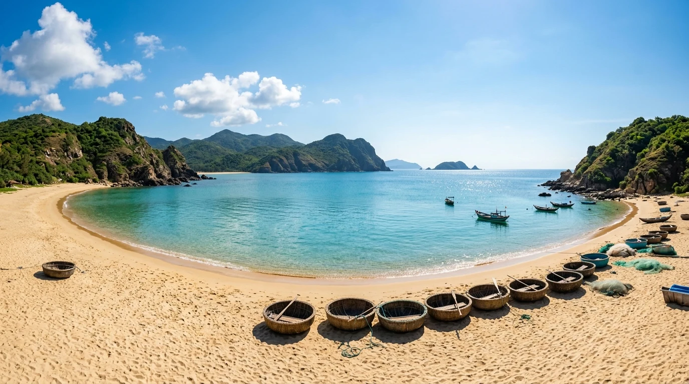
Tháng 3 – 5Mùa Khô Nắng Vàng Biển Êm
Biển Quy Nhơn phẳng lặng như mặt gương, bầu trời cao xanh không một gợn mây, nhiệt độ ấm áp 26°C – 28°C cực kỳ thích hợp cho các chuyến đi cano vượt sóng ra đảo Kỳ Co và Hòn Khô.
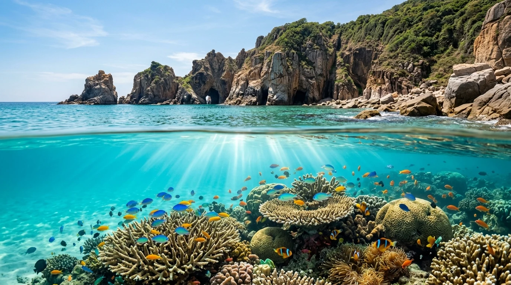
Tháng 6 – 8Mùa Lặn San Hô & Lễ Hội Biển
Độ trong của nước biển đạt mức tuyệt đối, nhìn rõ từng rạn san hô ngũ sắc và đàn cá bơi lội dưới đáy sâu tại Bãi Dứa, Cù Lao Xanh. Không khí lễ hội ẩm thực cá ngừ đại dương và võ cổ truyền rộn ràng khắp phố biển.
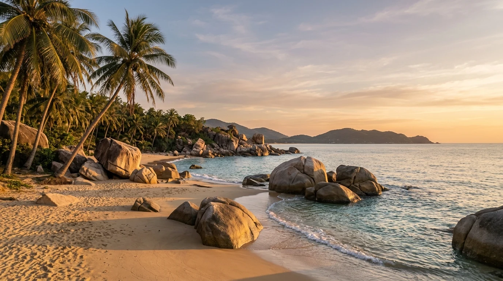
Tháng 9 – 10Mùa Thu Biển Vắng & Xứ Dừa
Những ngày thu dịu mát, lượng khách du lịch giảm bớt nhường chỗ cho vẻ đẹp tĩnh lặng nguyên sơ. Thích hợp cho những chuyến nghỉ dưỡng, tản bộ ngắm hoàng hôn Ghềnh Ráng và thưởng thức đặc sản xứ dừa Tam Quan.
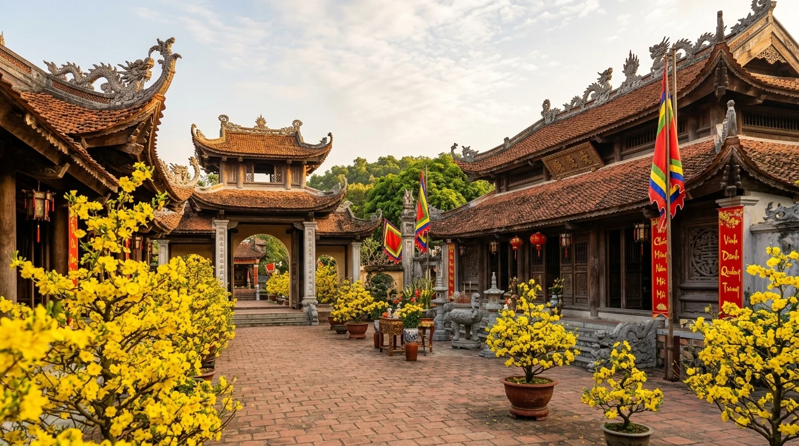
Tháng 1 – 2Mùa Xuân Trẩy Hội Đống Đa Tây Sơn
Mùa mai vàng xứ Nẫu nở rộ, du khách nô nức về trẩy hội Đền Tây Sơn Tam Kiệt mùng 4 – 5 Tết Nguyên Đán, hòa mình vào tiếng trống trận hào hùng và những bài quyền võ cổ truyền vang danh bờ cõi.
📸 5. Top 10 Thắng Cảnh Biểu Tượng & Dấu Tích Lịch Sử
(Nhấp vào từng hình ảnh để xem chi tiết ảnh chất lượng cao và câu chuyện truyền tích lịch sử chính thống)
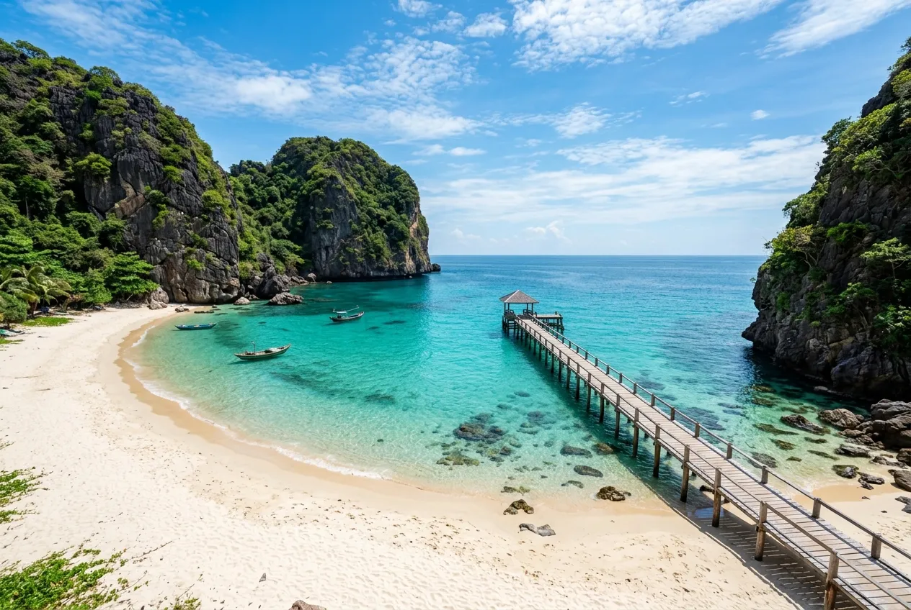
Bãi Biển Kỳ Co (Vịnh Nước Ngọc Bích)
Bãi cát trắng mịn màng uốn lượn dưới chân vách đá dựng đứng, làn nước biển hai màu lam ngọc trong thấu đáy cát.
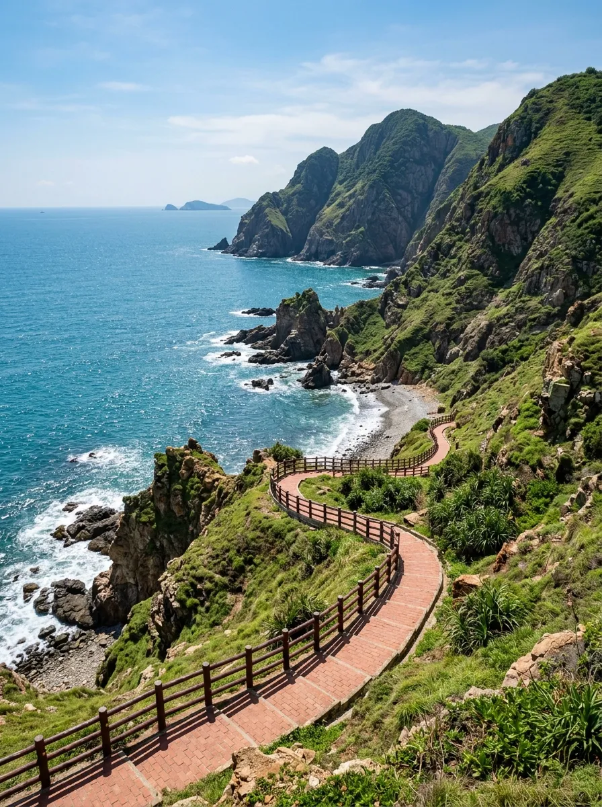
Eo Gió Nhơn Lý
Cung đường ven vách đá kỳ vĩ ôm trọn eo biển hút gió lồng lộng, nơi ngắm bình minh trên biển Đông ngoạn mục nhất.
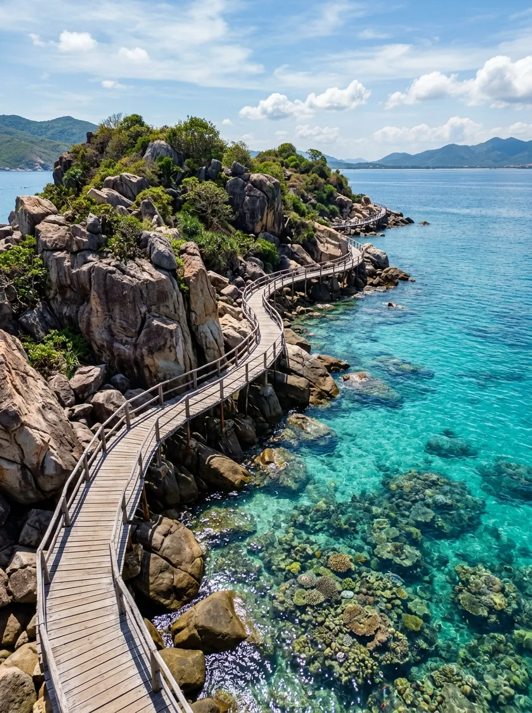
Đảo Hòn Khô (Nhơn Hải)
Con đường cát ngầm lộ thiên giữa đại dương khi thủy triều rút và rạn san hô sặc sỡ bơi lội ngay mép nước.
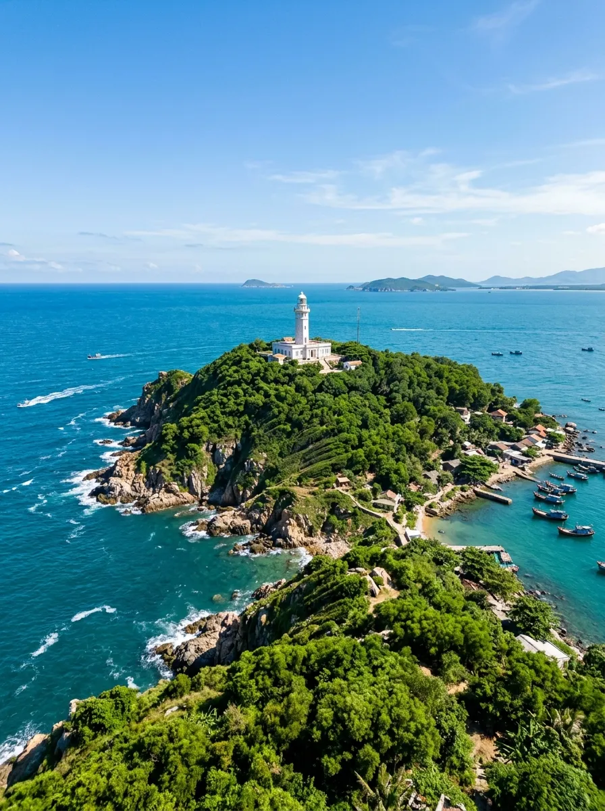
Đảo Cù Lao Xanh & Ngọn Hải Đăng Cổ 1890
Thiên đường biển đảo hoang sơ tuyệt đối, ngọn hải đăng đá cổ kính hơn 130 năm tuổi sừng sững canh giữ chủ quyền biển đảo.
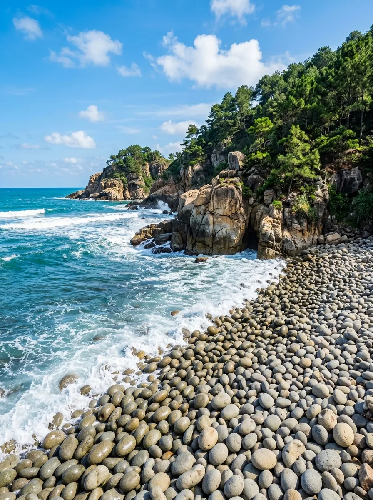
Ghềnh Ráng Tiên Sa & Mộ Hàn Mặc Tử
Bãi tắm Hoàng Hậu với muôn triệu viên đá cuội nhẵn bóng và đồi thi nhân nơi an nghỉ của thi sĩ Hàn Mặc Tử.
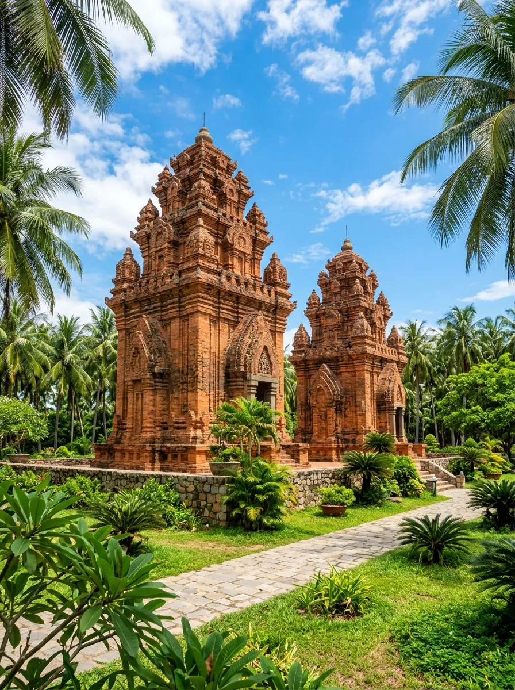
Tháp Đôi Chăm Pa (Tháp Hưng Thạnh)
Kiệt tác kiến trúc gạch nung thế kỷ XII giao thoa phong cách Chăm Pa và Angkor huyền bí sừng sững giữa phố thị.
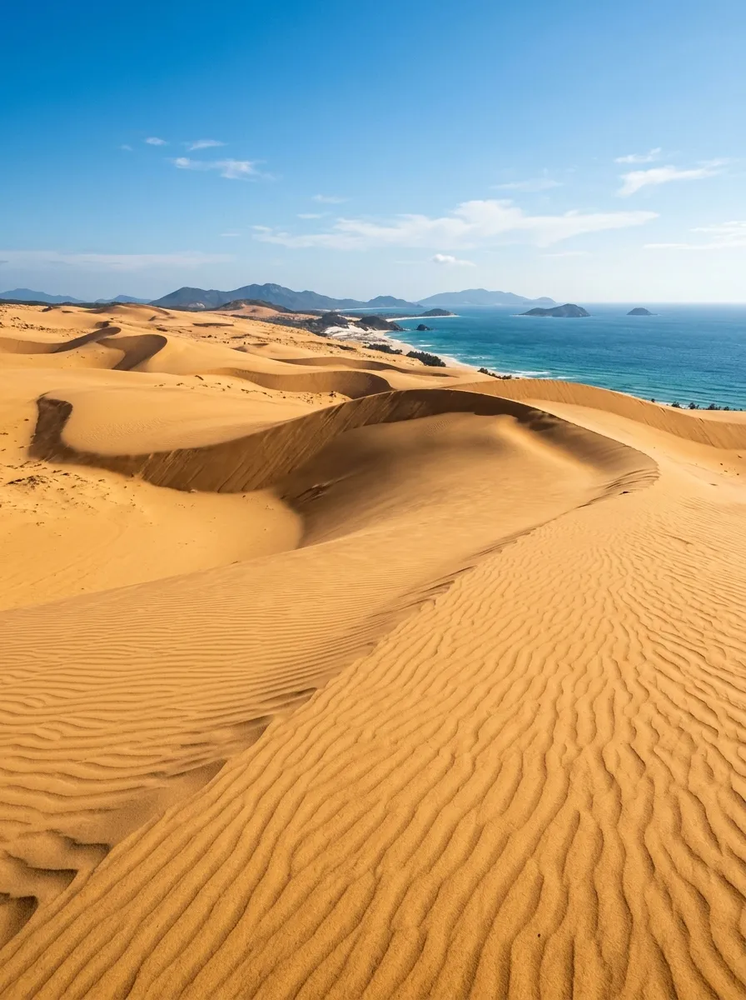
Đồi Cát Phương Mai
Những triền cát vàng óng ả uốn lượn theo chiều gió biển, nơi trải nghiệm trượt cát cảm giác mạnh độc đáo.
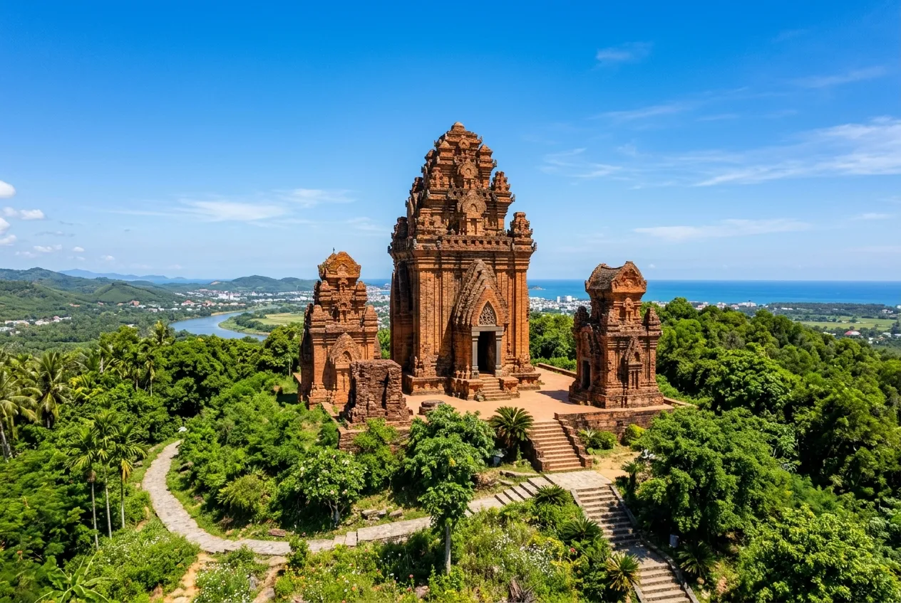
Quần Thể Tháp Bánh Ít (Tháp Bạc)
Cụm 4 tháp Chăm Pa nghìn năm tuổi tọa lạc trên đồi cao lộng gió, tuyệt tác kiến trúc lọt top thế giới.
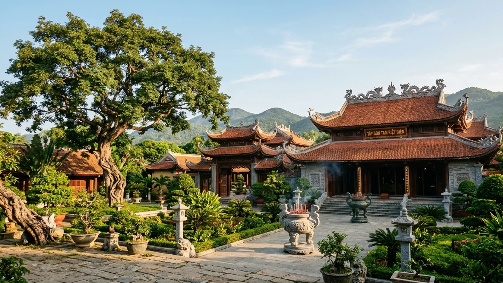
9. Bảo Tàng Quang Trung (Tây Sơn)
Cội nguồn phong trào khởi nghĩa Tây Sơn, nơi chiêm bái Điện thờ Tam Kiệt và cây me, giếng nước cổ hơn 300 năm lịch sử.
10. Chùa Thiên Hưng (An Nhơn)
Kiệt tác kiến trúc Phật giáo thanh tịnh giữa hồ sen thơm ngát, tháp chuông 12 tầng uy nghiêm giữa trời Nam.
🚗 6. Cẩm Nang Di Chuyển & Kết Nối Giao Thông Quy Nhơn
Nằm trên trục giao thông huyết mạch Bắc - Nam, du khách có thể dễ dàng đến với Quy Nhơn bằng cả đường hàng không, đường sắt và đường bộ:
✈️ Hàng Không & Đường Sắt:
Đường hàng không: Sân bay Phù Cát (UIH) cách trung tâm TP. Quy Nhơn khoảng 30km. Các hãng hàng không Vietnam Airlines, Vietjet Air, Bamboo Airways khai thác chuyến bay thẳng hàng ngày từ Hà Nội (~1h40m) và TP.HCM (~1h10m). Xe buýt sân bay về trung tâm có giá 50.000 VNĐ / lượt, taxi khoảng 200.000 – 250.000 VNĐ.
Đường sắt Bắc - Nam: Ga Diêu Trì (cách trung tâm ~10km) đón hầu hết các chuyến tàu hỏa Thống Nhất SE. Ga Quy Nhơn nằm ngay trung tâm thành phố đón tàu SQN / SE chuyên tuyến.
Di chuyển nội thành & Ra đảo: Thuê xe máy từ 120.000 – 150.000 VNĐ / ngày để vi vu các cung đường ven biển Nhơn Lý, Nhơn Hải. Đi đảo Kỳ Co hoặc Cù Lao Xanh di chuyển bằng cano cao tốc tại bến tàu Nhơn Lý hoặc Cảng Hàm Tử.
🍲 7. Tinh Hoa Ẩm Thực Xứ Nẫu Bình Định
Ẩm thực Xứ Nẫu mang phong vị mộc mạc, đậm đà nhưng tinh tế khó quên, chắt chiu từ hải sản biển sâu và hạt gạo phù sa sông Côn:
🎫 8. Bảng Giá Vé Tham Quan & Dịch Vụ Biển Đảo Quy Nhơn
Bảng giá vé niêm yết chính thức tại các điểm danh lam thắng cảnh và dịch vụ cano tại Quy Nhơn:
| Điểm tham quan / Trải nghiệm | Địa phương | Giá vé người lớn | Ghi chú / Dịch vụ đi kèm |
|---|---|---|---|
| Khu du lịch Kỳ Co | Xã Nhơn Lý | 120.000 VNĐ | Bao gồm vé vào cổng + xe trung chuyển 2 chiều |
| Tour Cano Kỳ Co + Lặn San Hô | Bến Nhơn Lý | 250.000 – 350.000 VNĐ | Cano cao tốc khứ hồi, ngắm san hô Bãi Dứa, áo phao, kính lặn |
| Danh thắng Eo Gió | Xã Nhơn Lý | 25.000 VNĐ | Vé vào cổng đường đi bộ ven vách đá |
| Tháp Đôi Chăm Pa | Nội ô Quy Nhơn | 20.000 VNĐ | Di tích kiến trúc nghệ thuật quốc gia |
| Quần thể Tháp Bánh Ít | Huyện Tuy Phước | 20.000 VNĐ | Di tích quốc gia trên đồi cao |
| Ghềnh Ráng — Tiên Sa & Mộ Hàn Mặc Tử | Phường Ghềnh Ráng | Miễn phí 100% | Danh lam thắng cảnh quốc gia mở cửa tự do |
| Đồi cát Phương Mai | Bán đảo Phương Mai | Miễn phí 100% | Thuê ván trượt cát: 20.000 – 30.000 VNĐ / ván |
| Cano ra đảo Cù Lao Xanh | Cảng Hàm Tử | 350.000 – 450.000 VNĐ | Vé cano cao tốc khứ hồi (di chuyển ~30 phút) |
⚠️ Lưu ý: Giá tour cano biển đảo và lặn ngắm san hô có thể thay đổi tùy theo điều kiện thời tiết thực tế và các dịp lễ Tết cao điểm.
🧭 9. Gợi Ý Lịch Trình Khám Phá Quy Nhơn (3 Ngày 2 Đêm)
📅 Lịch trình 3 Ngày 2 Đêm (Trọn vẹn Biển đảo & Di sản Chăm Pa)
Ngày 1: Đến Quy Nhơn → Tháp Đôi → Ghềnh Ráng Tiên Sa → Phố biển về đêm: Trưa đáp sân bay Phù Cát hoặc ga Diêu Trì, nhận phòng khách sạn đường biển Xuân Diệu hoặc An Dương Vương. Chiều ghé thăm Tháp Đôi Chăm Pa giữa lòng phố thị, sau đó vãn cảnh Ghềnh Ráng Tiên Sa, dạo bước trên Bãi Đá Trứng và viếng mộ nhà thơ Hàn Mặc Tử. Tối thưởng thức bún chả cá và dạo chợ đêm Quy Nhơn.
Ngày 2: Thiên đường Kỳ Co → Eo Gió lộng gió → Đồi cát Phương Mai: Sáng sớm di chuyển qua cầu Thị Nại dài gần 2,5km vượt đầm sang Nhơn Lý. Lên cano cao tốc vượt sóng ra bãi tắm Kỳ Co tắm biển ngọc bích, sau đó cano đưa đi lặn ngắm san hô rực rỡ tại Bãi Dứa. Trưa thưởng thức đại tiệc 8 món hải sản tươi sống làng chài Nhơn Lý. Chiều tản bộ con đường ven vách đá đón gió đại dương tại Eo Gió và ghé đồi cát Phương Mai trượt cát đón hoàng hôn. Tối ăn bánh xèo tôm nhảy giòn rụm.
Ngày 3: Tháp Bánh Ít → Bảo tàng Quang Trung Tây Sơn → Mua quà xứ Nẫu: Sáng vượt đồi chiêm bái cụm tháp Bánh Ít nghìn năm tuổi, xuôi về huyện Tây Sơn viếng Đền thờ Tây Sơn Tam Kiệt, chiêm ngưỡng cây me và giếng nước thiêng hơn 300 năm tuổi, xem biểu diễn trống trận và võ cổ truyền Bình Định. Chiều mua nem Chợ Huyện, chả ram tôm đất, bánh ít lá gai làm quà trước khi ra sân bay trở về.